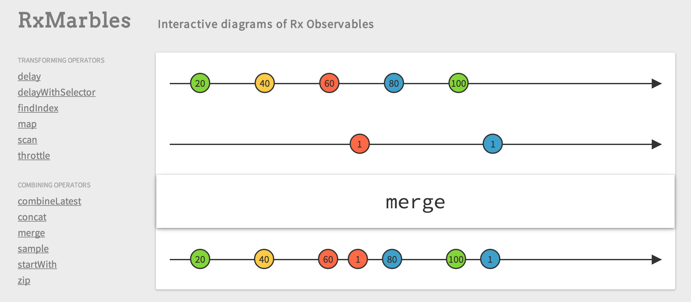
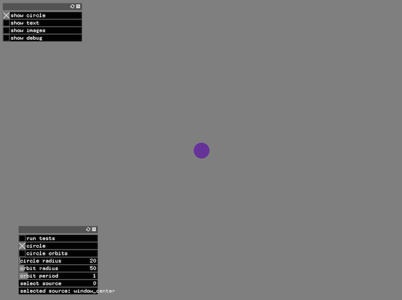
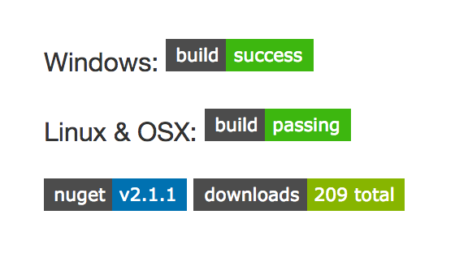
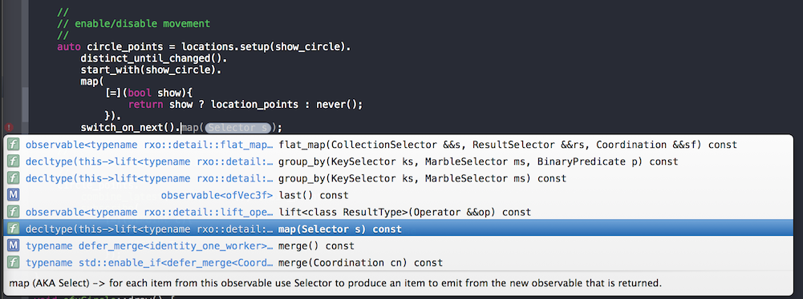
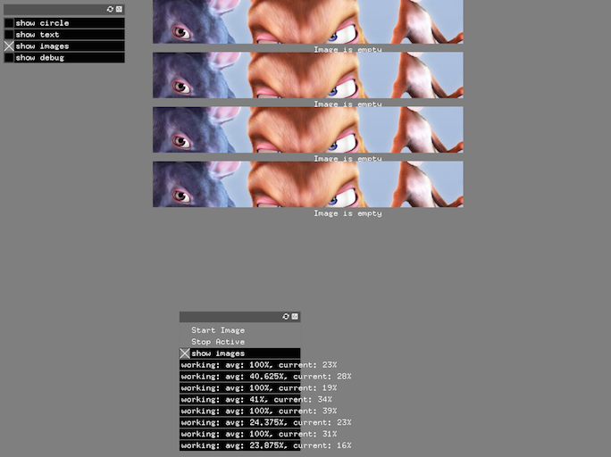

Async sequences and algorithms
building usable async primitives
Created by Kirk Shoop / @kirkshoop / source
use all available resources
independent and eager
Photo Credit: Olgierd Pstrykotwórca cc
use minimal resources
dependent and lazy
Photo Credit: Rob Grambau cc
Asynchronous and Concurrent
Photo Credit: Carlos Caicedo cc

Streams are not always Bytes

All about the algorithms
Movie Credit: Office Space
Time-Indexed Sequences of <T>
Photo Credit: Rik Hermans cc
Examples
- Periodic Timer
- Mouse Clicks
- Mouse Moves
- Network Packets
- File Reads/Writes
- . . .
Describing Sequences in Time
Credit: RxJava Wiki

value sequence diagram
Credit: RxJava Wiki

value generator diagram
Credit: RxJava Wiki

Time interval diagram
Credit: RxJava Wiki

interactive diagrams
Many interactive diagrams can be found at RxMarbles
Circle Demo
Idea credit: David Sankel's cppnow2014 presentation
Combine Time and Movement
auto orbit_points = orbitPointsFromTimeInPeriod( timeInPeriodFromMilliseconds( updates. milliseconds())); auto location_points = mouse. moves(). map(pointFromMouse); location_points. combine_latest(std::plus<>(), orbit_points). subscribe( [=](ofPoint c){ // update the point that the draw() call will use center = c; });
Orbit from Time
rxcpp::observable<float> ofxCircle::timeInPeriodFromMilliseconds( rxcpp::observable<unsigned long long> timeInMilliseconds){ return timeInMilliseconds. map( [this](unsigned long long tick){ // map the tick into the range 0.0-1.0 return ofMap(tick % int(orbit_period * 1000), 0, int(orbit_period * 1000), 0.0, 1.0); }); } rxcpp::observable<ofPoint> ofxCircle::orbitPointsFromTimeInPeriod( rxcpp::observable<float> timeInPeriod){ return timeInPeriod. map( [this](float t){ // map the time value to a point on a circle return ofPoint(orbit_radius * std::cos(t * 2 * 3.14), orbit_radius * std::sin(t * 2 * 3.14)); }); }
Rx - Reactive Extensions

Origin
- Rx originated as Rx.Net
- Rx.Net followed LINQ.
LINQ
- Set of algorithms for
IEnumerable - Equivalent to range efforts for C++
- Names from SQL syntax
// C#
List<string> fruits =
new List<string> { "apple", "passionfruit", "banana", "mango",
"orange", "blueberry", "grape", "strawberry" };
IEnumerable<string> query = fruits.Where(fruit => fruit.Length < 6);
IEnumerable<int> squares =
Enumerable.Range(1, 10).Select(x => x * x);
Rx is LINQ inverted
LINQ (Pull)
// C# // GetEnumerator starts an independent in-order traversal of the source IEnumerator<T> IEnumerable<T>::GetEnumerator(); void IEnumerator<T>::IDisposable::Dispose(); // cancelation bool IEnumerator<T>::MoveNext(); // false for complete T IEnumerator<T>::Current; // throws for error
Rx (Push)
// C# // Subscribe inverts GetEnumerator and MoveNext IDisposable IObservable<T>::Subscribe(Observer<T>); void IDisposable::Dispose(); // cancelation Observer<T>::OnComplete(); // inverts MoveNext return value Observer<T>::OnNext(T); // inverts Current Observer<T>::OnError(Exception); // inverts throw
Time
// C# DateTimeOffset Scheduler::Now; // current time IDisposable Scheduler::Schedule(DateTimeOffset dueTime, Action action); void IDisposable::Dispose(); // cancelation void Action::Action();
Rx Contract
- OnNext, OnError and OnComplete calls are always serialized
- Dispose, OnError and OnComplete terminate
- OnError and OnComplete call Dispose
Credit: RxJava Wiki
Rx and FRP
Time in Rx is Discrete, not Continuous
Rx Learning Resources
RxCpp
Origin
- Started as a prototype written by Aaron Lahman
- v2 changes the tradoffs selected by the prototype
- v2 has changes introduced in RxJava
V2 Design goals
- header-only
- compile-time polymorphism
- opt-in runtime polymorphism
- opt-in concurrency
- ref classes wrapping all pointers
- compiles with latest gcc, clang and VC compilers
- C++ library is the only dependency
Lifetime
subscription
// lifetime bool subscription::is_subscribed(); void subscription::unsubscribe(); // nested lifetimes weak_subscription composite_subscription::add(Subscription /*void()*/); void composite_subscription::remove(weak_subscription);
Factory
observable<>
static observable<T> observable<>::create<T>( OnSubscribe /*void(subscriber<T> out)*/); // sources static observable<T0> observable<>::from(T0, TN...); static observable<T> observable<>::iterate(Collection<T>); static observable<T> observable<>::range( T first, T last, difference_type step); static observable<long> observable<>::interval( rxsc::scheduler::clock_type::time_point initial, rxsc::scheduler::clock_type::duration period); static observable<T> observable<>::never<T>(); static observable<T> observable<>::empty<T>(); static observable<T> observable<>::error<T>(Exception); // . . .
Instance
observable<T>
composite_subscription observable<T>::subscribe( composite_subscription lifetime, OnNext /*void(T)*/, OnError /*void(std::exception_ptr)*/, OnCompleted /*void()*/); // operators observable<T> observable<T>::filter(Predicate /*bool(T)*/); observable<U> observable<T>::map(Transform /*U(T)*/); observable<V> observable<T>::flat_map( Extract /*observable<U>(T)*/, Transform /*V(T, U)*/); observable<U> observable<T0>::combine_latest( Transform /*U(T0, TN...)*/, observable<TN>...); observable<T> observable<T>::merge(observable<T>...); observable<T> observable<T>::concat(observable<T>...); // . . .
Thread-Safety
Coordination
// Default - not thread safe // noop for when all observables are using the same thread auto noop_immediate = identity_immediate(); auto noop_trampoline = identity_current_thread(); // Opt-in - thread safe // Uses a mutex to serialize calls from multiple threads auto serialize_with_pool = serialize_event_loop(); auto serialize_with_new = serialize_new_thread(); // Uses a queue to shift all calls to a new thread auto observe_on_pool = observe_on_event_loop(); auto observe_on_new = observe_on_new_thread();
Suggestions
Test Demo
timeInPeriodFromMilliseconds test
auto sc = rxsc::make_test(); auto w = sc.create_worker(); const rxsc::test::messages<unsigned long long> m_on; const rxsc::test::messages<float> p_on; auto xs = sc.make_hot_observable({ m_on.next(300, 250), m_on.next(400, 500), m_on.next(500, 750), m_on.next(600, 1000), m_on.completed(700) }); orbit_offset = 0; orbit_period = 1.0; auto res = w.start( [&]() { return timeInPeriodFromMilliseconds(xs); }); auto required = rxu::to_vector({ p_on.next(300, 0.25), p_on.next(400, 0.5), p_on.next(500, 0.75), p_on.next(600, 0.0), p_on.completed(700) }); auto actual = res.get_observer().messages();
orbitPointsFromTimeInPeriod test
const rxsc::test::messages<float> p_on; const rxsc::test::messages<ofPoint> pt_on; auto roundedPt = [](ofPoint pt){ return ofPoint(std::round(pt.x), std::round(pt.y)); }; auto xs = sc.make_hot_observable({ p_on.next(300, 0.25), p_on.next(400, 0.5), p_on.next(500, 0.75), p_on.next(600, 0.0), p_on.completed(700) }); orbit_radius = 50; auto res = w.start( [&]() { return orbitPointsFromTimeInPeriod(xs).map(roundedPt); }); auto required = rxu::to_vector({ pt_on.next(300, ofPoint(0, 50)), pt_on.next(400, ofPoint(-50, 0)), pt_on.next(500, ofPoint(0, -50)), pt_on.next(600, ofPoint( 50, 0)), pt_on.completed(700) }); auto actual = res.get_observer().messages();
Unit Tests
Library Credit: philsquared/Catch
Catch library test case
SCENARIO("take 2 - fails", "[take][fails][operators]"){ GIVEN("a source"){
auto sc = rxsc::make_test();
auto w = sc.create_worker();
const rxsc::test::messages on;
auto xs = sc.make_hot_observable({
on.next(150, 1), on.next(210, 2), on.next(220, 3),
on.next(230, 4), on.next(240, 5), on.completed(250)
});
WHEN("2 values are taken"){
auto res = w.start(
[xs]() {
return xs.skip(2).as_dynamic();
});
THEN("the output only contains items sent while subscribed"){
auto required = rxu::to_vector({
on.next(210, 2), on.next(220, 3), on.completed(220)
});
auto actual = res.get_observer().messages();
REQUIRE(required == actual);
}
// . . .
}}}
Catch library output
![-------------------------------------------------------------------------------
Scenario: take 2 - fails
Given: a source
When: 2 values are taken
Then: the output only contains items sent while subscribed
-------------------------------------------------------------------------------
/Users/kirk/source/rxcpp/Rx/v2/examples/tests/take.cpp:57
...............................................................................
/Users/kirk/source/rxcpp/Rx/v2/examples/tests/take.cpp:92: FAILED:
REQUIRE( required == actual )
with expansion:
{ @210-on_next( 2), @220-on_next( 3), @220-on_completed() }
==
{ @230-on_next( 4), @240-on_next( 5), @250-on_completed() }
===============================================================================](lib/image/catch_fails.png)
Image Demo
Threaded Http Get Requests
nexts.setup(next). map(send_urls). merge(). group_by( [=](const next_url& nu) { // round-robin requests across multiple threads return int(nu.first % thread_count); }, [](const next_url& nu) {return nu;}). map( [=](const rxcpp::grouped_observable<int, next_url>& urls){ auto producerthread = rxcpp::observe_on_one_worker( rxcpp::observe_on_new_thread(). create_coordinator(). get_scheduler()); return http_get_image( producerthread, urls.get_key(), urls, halts); }). merge(). subscribe();
Queuing options
rxcpp::observable<http_response_image>
http_get_image(
rxcpp::observe_on_one_worker producer,
int key,
const rxcpp::observable<next_url>& urls,
const rxcpp::observable<int> stops){
return urls.
map(
[=](const next_url& url){
return make_http_request(producer, key, url, stops);
}).
#if 0
// abort old request and start new request immediately
switch_on_next().
#else
// hold on to new requests until the previous have finished.
concat().
#endif
map(
[=](http_response_image progress){
return update_ui(key, progress);
});
}
}
Create cancellable request with retry
rxcpp::observable<http_response_image>
make_http_request(. . .){
++queued;
// ofx tracing hud does not support multiple threads yet
trace_off();
return http.get(url.second).
subscribe_on(producer).
map(http_progress_image).
merge().
observe_on(ofxRx::observe_on_update()).
lift<http_response_image>(
[=](rxcpp::subscriber<http_response_image> out){
return error_display(key, out);
}).
finally(
[=](){
if (--queued == 0) {trace_on();}
avg[key] = (progress_labels[key].first + avg[key]) / 2;
}).
retry().
take_until(stops);
}
append chunks and decode image
rxcpp::observable<std::shared_ptr<ofPixels>>
http_image(const ofxRx::HttpProgress& hp) {
return hp.
body().
scan(
std::make_shared<ofBuffer>(),
[](std::shared_ptr<ofBuffer> acc, ofxRx::BufferRef<char> b){
acc->append(b.begin(), b.size());
return acc;
}).
last().
// got all the data, do heavy lifting on the background thread
map(image_from_buffer);
}
Sending urls over time
rxcpp::observable<next_url>
send_urls(int) {
static int count = 0;
// adds the image url multiple times (20)
// one url is added every 200 milliseconds
return rxcpp::observable<>::
interval(
ofxRx::observe_on_update().now(),
std::chrono::milliseconds(200),
ofxRx::observe_on_update()).
take(20).
map(
[=](long){
return next_url(
count++,
"http://. . ./poster_rodents_small.jpg");
});
}
combine the progress and result
rxcpp::observable<http_response_image>
http_progress_image(const ofxRx::HttpProgress& hp) {
return http_progress(hp).
combine_latest(
http_image(hp).
start_with(std::shared_ptr<ofPixels>()));
}
produce error and percentage
rxcpp::observable<int>
http_progress(const ofxRx::HttpProgress& hp) {
return hp.
response().
map(http_status_to_error).
map(
[](ofx::HTTP::ClientResponseProgressArgs rp){
return int(rp.getProgress() * 100);
}).
distinct_until_changed();
}
End
Languages
- Rx.Net
- RxJs
- RxJava
- ReactiveCocoa, RxSwift
- RxPy
- RxGo
- ...
- Rxcpp
subscriber<T>
subscriber<T> make_subscriber<T>( composite_subscription lifetime, OnNext /*void(T)*/, OnError /*void(std::exception_ptr)*/, OnCompleted /*void()*/); // observer<T> void subscriber<T>::on_next(T); void subscriber<T>::on_error(std::exception_ptr); void subscriber<T>::on_completed(); // composite_subscription bool subscriber<T>::is_subscribed(); void subscriber<T>::unsubscribe(); weak_subscription subscriber<T>::add( Subscription /*void()*/); void subscriber<T>::remove(weak_subscription);
Coordination
rxsc::scheduler::clock_type::time_point identity_one_worker::now(); coordinatoridentity_one_worker::create_coordinator(composite_subscription);
coordinator<Coordinator>
rxsc::scheduler::clock_type::time_point coordinator<Coordinator>::now();
scheduler and worker
// scheduler std::chrono::steady_clock scheduler::clock_type; clock_type::time_point scheduler::now(); worker scheduler::create_worker( composite_subscription lifetime /*cancel all actions*/); // worker clock_type::time_point worker::now(); void worker::schedule( time_point when, composite_subscription lifetime, // cancel Action Action /*void()*/); void worker::schedule_periodically( time_point first, duration interval, composite_subscription lifetime, // cancel Action Action /*void()*/);
Recording and Scheduling Time
Now
returns the current time
Worker
each worker represents the
Review of Algorithm sets in C++
Value
Represenation: [type] value;
Algorithms:
operators like +, -, *, /, &, &&, |, ||, ~, ?: and statements like switch, if
Sequence
Represenation: iterator begin, iterator end
Algorithms: std::copy_if, std::transform, std::accumulate, std::rotate, std::sort, std::find, std::search
These do not compose well because they use two values to represent a sequence. Thus..
Range
Ranges are under active development. There is more than one representation.
Represenation: range values;
Algorithms: std::copy_if, std::transform, std::accumulate, std::rotate, std::sort, std::find, std::search
Parallel Sequence (Concurrent)
Represenation: [integral] start, [integral] end
Algorithms: parallel_for, parallel_transform, parallel_reduce, parallel_sort
Asynchronous Value
Represenation:
std::promise<T> produces;
std::future<T> consumes;
Proposed Algorithms: then, when_all, when_any, map, bind, catch_error
Asynchronous Sequence
This is under active development. This representation is the one that this presentation will cover.
Represenation:
rxcpp::observable<T> produces;
rxcpp::subscriber<T> consumes;
Algorithms: filter, map, reduce, group_by, flat_map, concat, merge, skip, take, buffer, window, combine_latest
Promises
Promise Buffer/Queue
Subscribe to each value
Mouse clicks
- miss clicks when not subscribed
- delivering old clicks when not subscribed
Backpressure
Cancel
Lifetime
async does not block the calling stack
Algorithms
take and skip are the same, while map and filter are different